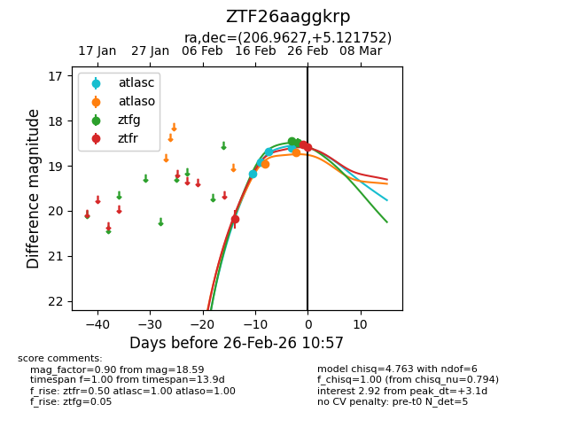
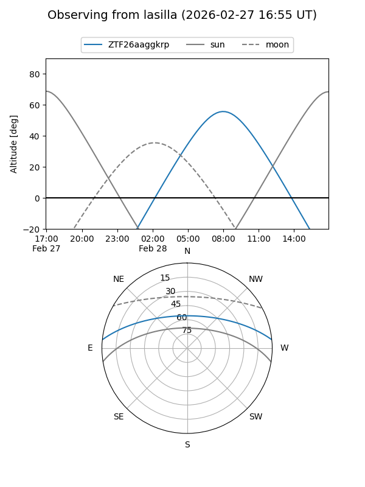
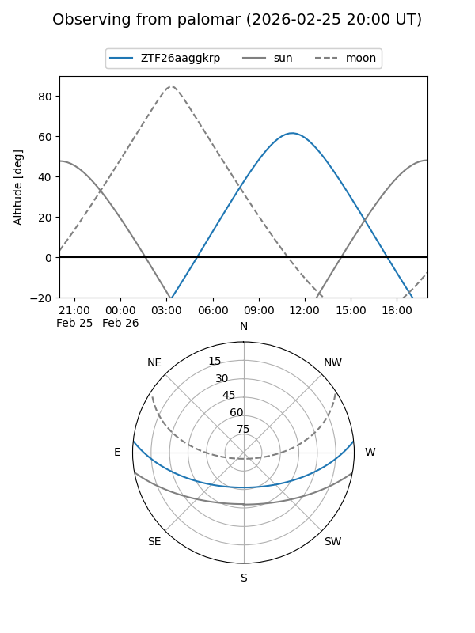
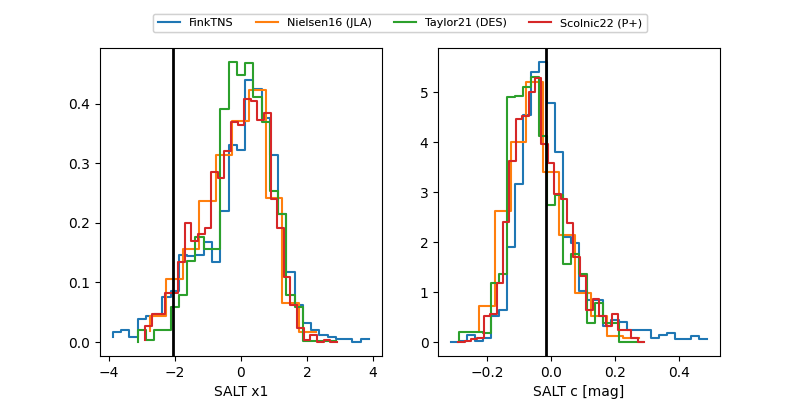

ZTF26aaggkrp
Target ZTF26aaggkrp at 2026-02-26 10:58
Aliases and brokers:
FINK: link
Lasair: link
ALeRCE: link
alt names
ZTF26aaggkrp (ztf,fink_ztf)
Coordinates:
equatorial (ra, dec) = 206.9627,+5.12175
equatorial (HMS+DMS) = 13:47:51.04,+05:07:18.31
galactic (l, b) = (336.8428,+64.21370)
Flags:
Photometry:
last atlasc=18.61, atlaso=18.70, ztfg=18.49, ztfr=18.59
4 atlasc, 2 atlaso, 2 ztfg, 3 ztfr detections
Lightcurve

Visibility


Additional plots
